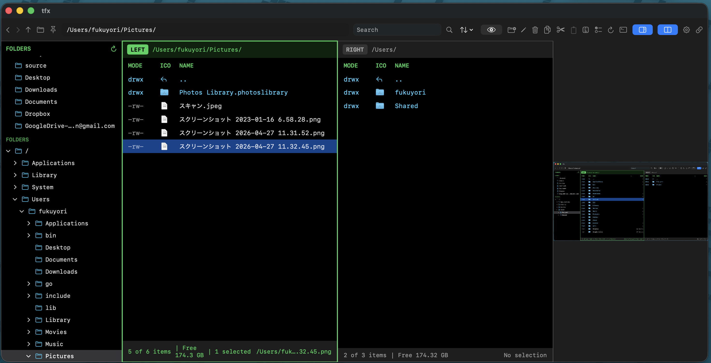
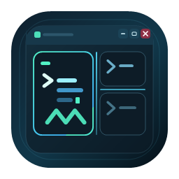
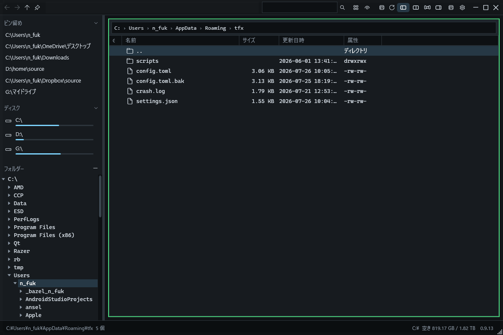
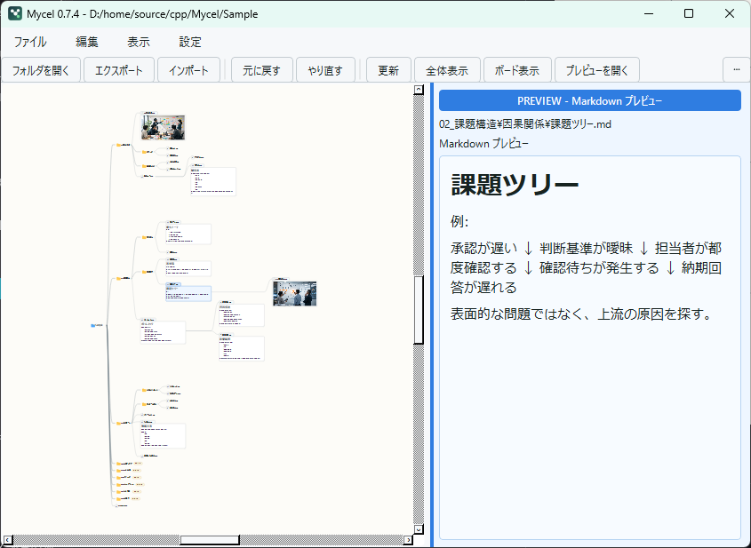
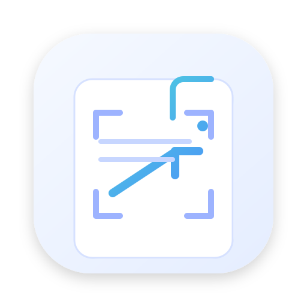

macOS + Windows + Linuxtfx family
tfx family
ターミナルの速さと、デスクトップアプリの見通しのよさを一つに。二画面、プレビュー、内蔵端末を備えたファイルマネージャーです。
tfxを詳しく見る → macOS版を見る ↗ Windows版を見る ↗ Linux版を見る ↗Independent software / Japan
ファイルを探す。文章を読む。端末を操る。ありふれた操作を、軽く、速く、気持ちよくするためのソフトウェアを作っています。

wtmux / 3.3.13 panes · 2 tabs
session ready_


01 / Featured
日常の小さな摩擦を、OSに馴染む道具へ。完成したアプリも、境界を試す実験も、すべてGitHubで公開しています。

ターミナルの速さと、デスクトップアプリの見通しのよさを一つに。二画面、プレビュー、内蔵端末を備えたファイルマネージャーです。
tfxを詳しく見る → macOS版を見る ↗ Windows版を見る ↗ Linux版を見る ↗ローカルLLMとMozc系辞書を組み合わせ、次の日本語入力を探る実験的IME。TSFと推論エンジンを別プロセスに分けた設計です。
rakukanを詳しく見る → プロジェクトを見る ↗tmuxの操作感をWindowsからすべての主要デスクトップOSへ。エージェント作業にも馴染むターミナルマルチプレクサー。
wtmuxを詳しく見る → プロジェクトを見る ↗縦書き、固定レイアウト、読み上げ、注釈、ローカルAI翻訳。作品の組版を保ちながら読む、クロスプラットフォームEPUBリーダー。
Spindleを詳しく見る → プロジェクトを見る ↗
画面の好きな範囲をすばやくキャプチャし、矢印、図形、文字、ぼかしなどで分かりやすく注釈できるWindowsアプリ。
SnapNote Studioを詳しく見る → プロジェクトを見る ↗02 / App catalog
配布物、ソースコード、詳しい使い方は各GitHubリポジトリに掲載しています。実験段階のプロジェクトはREADMEの注意事項をご確認ください。
03 / Browser extensions
いつものWebサービスを、情報量や関心に合わせて整える小さな機能拡張です。
04 / Principles
目新しさより、手に馴染むこと。大きな仕組みより、手元で確かに動くことを大切にしています。
キーボードと直接操作を中心に、考えを止めない短い動線を設計します。
ファイルや入力をむやみに外へ送らず、手元のPCで制御できる構成を優先します。
設定、ログ、ソースコードを開き、利用者が動作を理解して選べる状態を保ちます。